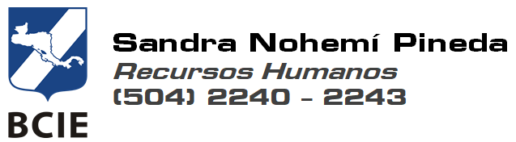

| Estimado colaborador, | |
| Recursos Humanos ha creado un protocolo de ingreso a las instalaciones de BCIE, para cuando las actividades vuelvan a la normalidad, igualmente aplica para las personas que por alguna razón deban presentarse al banco en los siguientes días, favor leer detenidamente el reglamento publicado en el siguiente enlace: | |
| https://portal.bcie.org/protocolo-ingreso. | |
| Adicionalmente se tramitarán salvoconductos para el retorno a las oficinas, favor llenar el siguiente formulario de forma obligatoria a mas tardar al final de la semana: | |
| https://portal.bcie.org/formulario-salvoconducto. | |
| Saludos cordiales. |
|  |
|